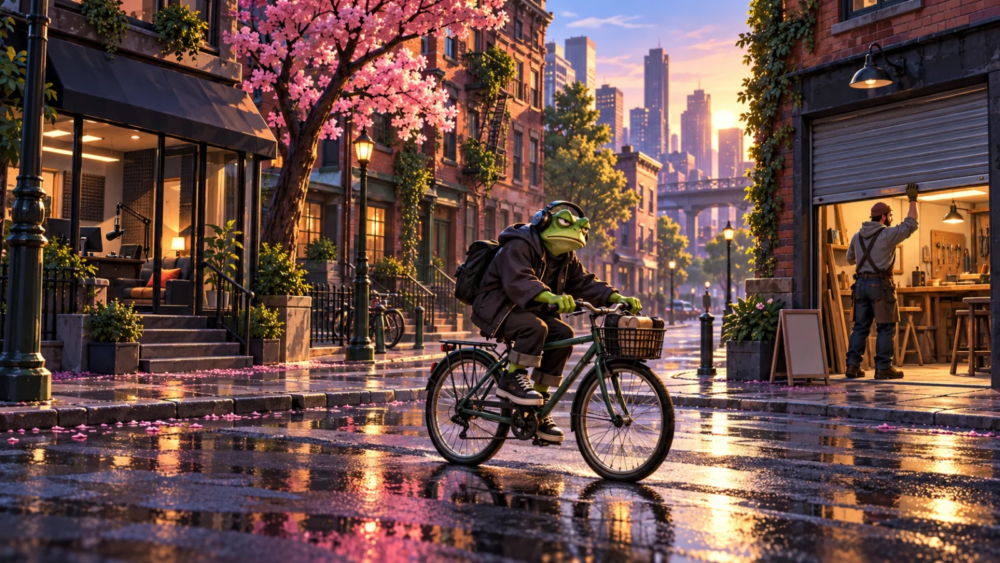
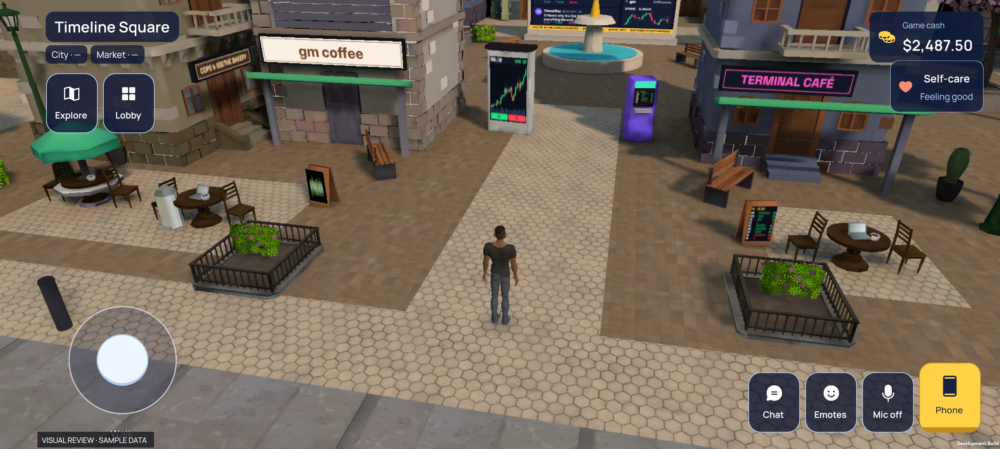

THE TIMELINEHAS AN ADDRESS.
Trade pretend coins. Pick up a shift.
Build something with
your people.
A whole city for the lives between the posts.
Even the
landlord has a thesis.

The city never
logs off.
The café. The studio. The next terrible idea.
There’s always
somewhere to be.
A DAY
IN CT LIFE.
Start in the square.
Find your next side quest.


Find your people.
The square is where your day starts. Walk the streets and open your in-game phone.
V7 · 7 October 2026Local development captures with sample data. These screens do not show live multiplayer.
GOOD TO
KNOW.
What kind of game is this?
A 3D life simulation set in a city built around Crypto Twitter culture. The game brings together fictional markets, jobs, projects and places to hang out.
Where can I play?
CT Life is being built as a native Android game for Solana Seeker. There is no public download yet.
Are the markets real?
The trading simulation uses fictional coins and in-game cash. That cash cannot be withdrawn.
Is the artwork actual gameplay?
The opening is original concept art. The images in “Inside the game” are actual development captures from a Solana Seeker, using sample data.
SEE YOU
ON THE INSIDE.
Coming to Solana Seeker.
The public download is not available yet. The images above show the current development build.